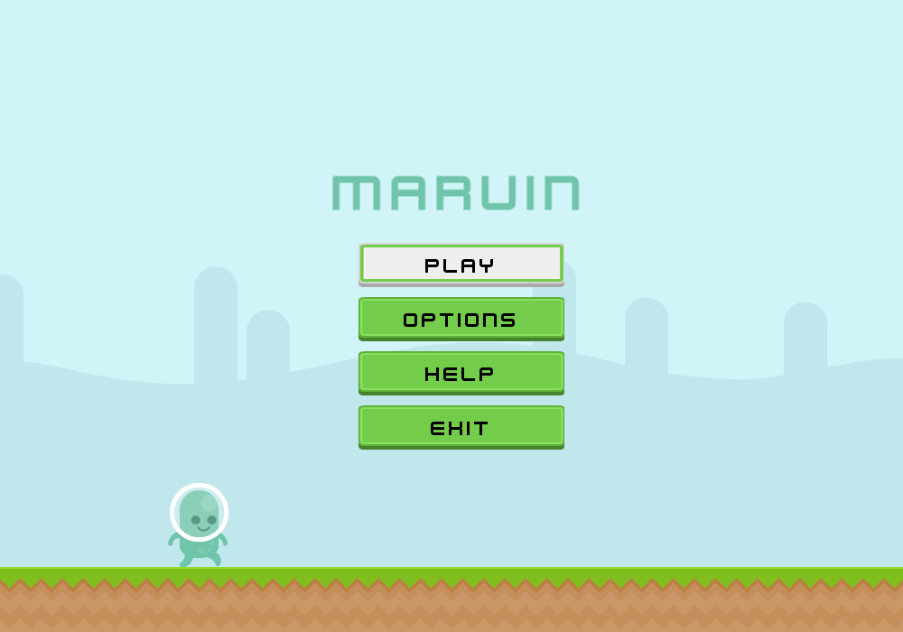

About
Marvin is a desktop platformer I developed in C++ using the Box2D physics library and SFML. I drew a fair bit of inspiration from Super Meat Boy in the sense that the game has an innocent feel to it, but is still meant to be challenging. I'm always looking for suggestions and improvements to make. What are you waiting for? Give it a try!
Getting Started
As of now Marvin is only playable on Windows. The game is pre-built and is packaged in a .zip file which you can download above! Just extract and click on the executable inside. If you're curious about the backbone of the game, the source code is publicly available on my GitHub.
Attributions
Special thanks to Kenny (http://kenney.nl/) for providing absolutely wonderful free assets! Also thanks to Foaly (@Foaly) for providing an Animated Sprite and Animation class, Xelu for keyboard prompts, and rezoner and OveMelaa for the great music!
Support or Contact
Found a bug? Have a suggestion? Just want to chat? Contact me at tmsander@uwaterloo.ca.